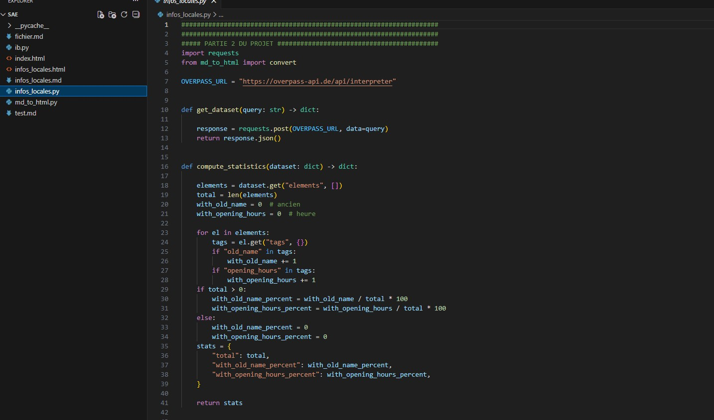
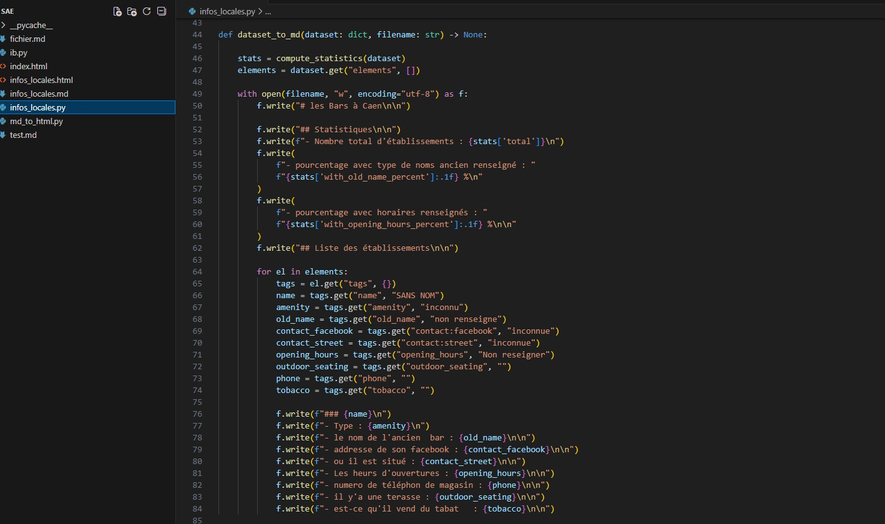

Durée : 2 semaines | Travail en équipe : Projet collaboratif
J'ai participé à un projet de traitement et d'analyse de données pour transformer des informations brutes en insights exploitables. L'objectif était de maîtriser les phases clés du cycle de vie des données : collecte, nettoyage, structuration, analyse et présentation. Cette compétence est devenue essentielle dans tout environnement informatique moderne.

Schéma ou capture montrant une étape importante du traitement des données.

Autre preuve visuelle liée à l’analyse et au traitement des données.
Points forts : J'ai démontré une méthodologie rigoureuse dans chaque phase du traitement des données. La collaboration en équipe a renforcé ma compréhension, et j'ai su adapter mes outils en fonction des défis rencontrés.
Apprentissages clés : Cette SAÉ m'a fait découvrir l'importance critique de la qualité des données. J'ai compris que 80% du temps d'un projet d'analyse est consacré au nettoyage et à la structuration, et que cette phase détermine la validité des résultats.
Difficultés rencontrées : La gestion des données manquantes et des anomalies a posé des défis. J'ai dû approfondir ma compréhension statistique pour justifier les choix d'imputation et de traitement des outliers.
Améliorations possibles : J'aurais pu explorer davantage les techniques d'apprentissage automatique pour la prédiction. Une approche plus programmée (Python, R) aurait aussi automatisé les processus et rendu le pipeline plus scalable.
Compétence renforcée : AC13.05 – Choisir les mécanismes de gestion de données adaptés au développement.